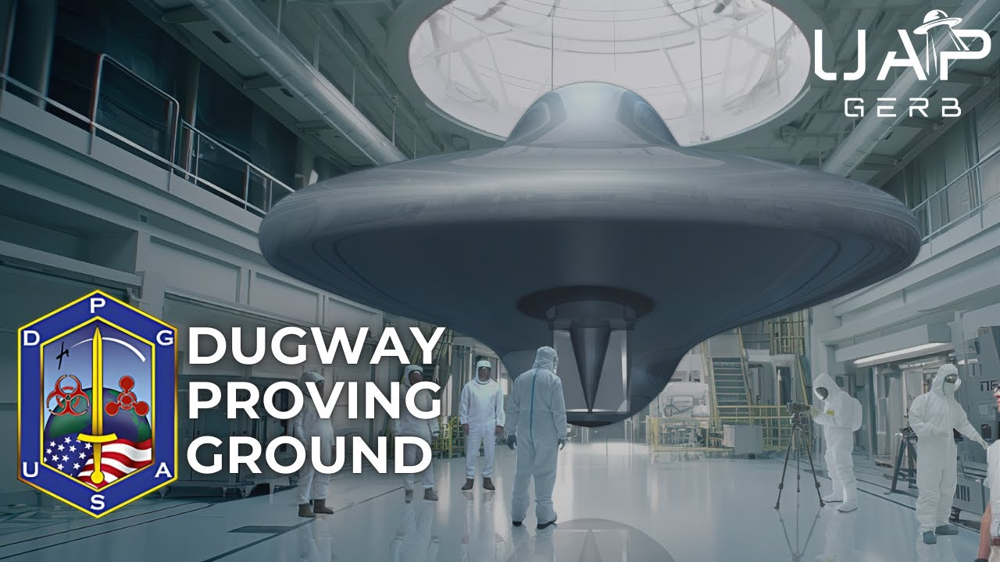

Dugway Proving Ground - UFO Legacy Programs

Published: 2025-02-20 · Duration: 1:17:28 · Channel: UAP Gerb
Description
An in-depth investigation into Dugway Proving Ground and the site's long history of involvement with UFO reverse engineering and technology of unknown origin (TUO) exploitation programs. Often referred to as Area 52, Dugway Proving Ground serves as the US Army's premiere chemical and biological weapons testing facility spanning over 1,250 square miles in the Utah Desert. Dugway is host to two DOD Major Range Test and Facility Bases (MRTFB) - the Army West Desert Test Center, and the southern range of the Utah Test and Training Range (UTTR). MRTFBs serve as the DOD's "critical core" for all test and evaluation of military vehicles, equipment, and weaponry.
This investigation harnesses the witness testimony of one M.S. who incidentally stumbled on a clandestine group of scientists and armed personnel engaging with a non-human craft in the Dugway Avery Region. The project analyzes this testimony to form a thesis both Dugway MRTFBs operate a joint UFO reverse engineering program with an emphasis on chemical and biological concepts re UAP.
Additionally, the project aims to explore claims of projects being moved from Area 51 to "Area 52" (Dugway) and investigate numerous claims of a Deep Underground Military Base (DUMB) below the Utah range.
0:00 Intro 03:27 Dugway Overview 11:22 DPG & UFO 29:41 M.S. Witness Testimony 57:25 Battelle Memorial Institute 1:04:25 Conclusion
--- ALL RESEARCH LINKS AND MATERIALS CAN BE FOUND IN THE PDF LINK BELOW ---
https://www.dropbox.com/scl/fi/czdznuyl75y5aw1tlvefl/UAP-GERB-DPG-LINKS.pdf?rlkey=w6n13yoehjah0cjn260avyjq6&st=w2ekrrjp&dl=0
THIS VIDEO IS FOR EDUCATIONAL PURPOSE ONLY! FAIR USE PRINCIPLES UNDER SECTION 107 OF THE COPYRIGHT ACT.
ufo #uap #uapnukes #uapdisclosure #ufology #ufonews #ufosightings #uapsightings #ufofootage #uapfootage #hynek #condoncomittee #Jallenhynek #projectsign #projectgrudge #projectbluebook #bluebook #ufocongress #SOL #solfoundation #karlnell #Battelle #UFOreverseengineering #lockheed #skunkworks #lockheedmartin #rosscoulthart #fastwalker #blackvault #slowwalker #kingman #ufocrash #nickredfern #Grusch #michaelherrera #USO #TimothyGallaudet #mystery #mysteries #unexplained #extraterrestrial #space #technology #greer #kecksburg #kecksburgUFO #nasa #edwards #usaf #elizondo #arv #McCandlish #immaculateconstellation #rosscoulthart #edgarfouche #tr3b #arv #DUGWAY
Transcript
Show transcript
Officially designated as the Dugway Proving Ground, this military facility covers an astounding 1,250 square miles of the Great Salt Lake Desert. Dugway's official mission is to test top-secret weapons and aerospace systems, but UFO researchers believe the true purpose of Area 52 is even more sinister. When you imagine UFO legacy program operations focused on the retrieval and exploitation of technologies of unknown origin, what kind of facilities come to mind? Is it Area 51, and it's alleged legendary auxiliary site S-4? Maybe you think of the Naval Surface Warfare Center Crane, and it's possible off-world technologies division? Or perhaps you reference China Lake Weapon Center, Edwards Air Force Base, Wright Patterson Air Force Base, or any number of U.S. Department of Defense installations that are steeped in UFO lore? Maybe, just maybe, when imagining UFO legacy program locations, you picture Dugway Proving Ground, an enormous 1,300 square mile U.S. Army installation nestled between three mountain ranges in remote Utah that specializes in the testing of biological and chemical weapons. Even referred to as Area 52, Dugway Proving Ground rose to prominence in the late 90s as the successor to Area 51's UFO programs due to heavy public exposure on the once-denied Nevada site. Ever since, the Utah site and accompanying two premier MRTFBs have been the focus for deep-six clandestine UAP operations. But this spotlight doesn't solely focus on the enormous facilities sprawling across the Utah desert. Dugway has additionally been accused as the location of a dumb, a deep underground military base. Today we shed light on Dugway and discussion of its technologies of unknown origin, exploitation programs, and subterranean presence. Through analysis of the facility's intriguing Army and Air Force MRTFBs, study of defense contractors present on site, and careful evaluation of the witness testimony of one MS, who I have covered on this channel before, who stumbled upon a craft of likely non-human origin at the infamous Dugway range. Hey guys, it's UAP Gerb and I am thrilled for you to join me as we venture into the world of legacy UFO programs to analyze Dugway Proving Ground. How deep does the rabbit hole go between the United States' premier biological and chemical weapons testing facility and non-human technology? But individuals, military units, and corporations possibly engage with Dugway and UFO reverse engineering and material exploitation programs. And does Dugway operate such UFO programs above and below the Earth's surface? Join me today as we find out. Dugway Proving Ground is located 85 miles southwest of Salt Lake City in Tawilla County, Utah. The site encompasses over 1,250 square miles and it is larger than the U.S. state of Rhode Island. The site itself is ideal for seclusion and privacy free from urban encroachment, light pollution, and excess acoustic and electronic noise. Dugway is surrounded by mountains, salt flats, and desert terrain. These geological features combined with a defense retainer that will apprehend approaching civilians with armed personnel and black-op helicopters. Make the Utah Proving Ground perfect for clandestine and classified military test and evaluation. Dugway was founded in 1942 with the mission to test U.S. and allied chemical and biological defense systems and perform nuclear, biological, and chemical survivability testing and training of defense material using chemical and biological agents and stimulants. The Utah Proving Ground uses its state-of-the-art laboratories and chambers to conduct testing and training under environmentally controlled conditions. Dugway's inception arose from the 1941 Pearl Harbor attacks which quickly saw the United States military increase military capabilities in numerous areas including chemical and biological warfare. The infamous site has participated in the never-ending global war on terrorism, employing Special Forces mission rehearsals, classified testing, and biochem urgent need equipment testing. Dugway has a laundry list of significant accomplishments including unmanned aerial systems test support, but we will skip over exploring this entire list of accomplishments. According to a 2021 U.S. Army Dugway Proving Ground Mission and Capabilities Overview public report, Dugway is a massive contributor to Utah's economy. Deploying a total of 2,120 employees in residence, 784 of which are primarily Army and Air Force contractors, 622 of which consist of primary mission and installation contracting command, think on-site security personnel, and 486 of these military or defense agency civilians. Dugway or DPG, as we'll refer to it throughout this project, partners with myriad U.S. military, government, and intelligence agencies including many that harbor our interest throughout this investigation. U.S. Army Airborne, Navy, SOCOM, a.k.a. Special Operations Command, the 388th Range Squadron out of Hill Air Force Base, Departments of Justice, Homeland Security and Interior, NASA, and three universities. Out of these three universities, I would like to draw specific mention to Utah State University. U.S.U. employs a university affiliated research center, UARC, for the Missile Defense Agency known as the Space Dynamics Laboratory. In numerous projects, I have spoken on UARCs and their similar counterparts Federally Funded Research and Development Center's FFRDCs. FFRDCs and UARCs are semi-private, DOD-driven research and development institutions. I have spoken ad nauseam, our key contributors to UAP legacy programs. While not the topic of today, UARCs and FFRDCs likely exist as a sort of project manager, serving as subject matter experts and research and development leaders for joint corporate and U.S. government UAP programs. In fact, I believe these two types of institutions to be exponentially more knowledgeable on and crucial to UFO exploitation programs than most defense contractors through their sole source contracts. On this topic for another day, however, FFRDC will come up again throughout this presentation. For this investigation, we will primarily be focusing on two locations on Dugway known as MRTFBs, Major Range Test and Facility Bases. MRTFBs are known as the, quote, core set of DOD test and evaluation infrastructure and associated workforce that must be preserved as a national asset to provide T&E capabilities to support the DOD acquisition system, end quote. The quote unquote critical core of test bases comprise over 10 million acres of land in the United States, employ over 25,000 people annually and receive over $4 billion in acknowledged funding annually. There exists a total of 23 acknowledged MRTFBs, eight Army including Yuma Test Center, Arizona and White Sands missile range. Six Navy installations including Naval Air Warfare Center Pax River and China Lake Naval Warfare Center and seven Air Force Bases including Edwards 412 Test Wing, Nevada Test and Training Range and the 30th Space Wing at Vandenberg and two defense agency bases. Many here will associate all listed locations with mentions of UFO legacy programs. I myself have extensively published on witness Ed, who spoke of a joint UFO reverse engineering operation between the Nevada Test and Training Range and Edwards 412 Test Wing in California. I strongly recommend viewing this project if you have not already. Dugway Proving Ground possesses one such MRTFB, the US Army's West Desert Test Center and also shares the South Range of the Air Force's MRTFB, Utah Test and Training Range with nearby Hill Air Force Base. Pay close attention to these two major bases as when we analyze the testimony of MS we will be exploring a thesis of a joint Army and Air Force legacy program comprised of the WDTC West Desert Test Center and the UTTR Utah Test and Training Range that extend deep below the Earth's surface. And while on the subject of MRTFB's we will dive into much more detail later on including discussing the Avery Technical Center and shared Michael Army Airfield which I believe is the operational above ground testing location of this joint UFO project. But before we venture into Dugway's history with UFO, let's touch on one more thing while the West Desert Test Center is fresh in your mind. Investors at WDTC are spearheaded by Army Test and Evaluation Command. As we begin to implicate Dugway and thus ATEC as engaging in UFO legacy programs I find the Army Test and Evaluation Organization structure well worth referencing. Analyzing the reporting structure of ATEC, far up the food chain we can observe the Secretary of the Army as well as the Chief of Staff and Vice Chief of Staff of the Army answering directly to the US Secretary of Defense. Those subsets pertain to these four positions including Director of Operational Test and Evaluation. But what is interesting here is oversight and TNE policy as well as USA Tech Command is independent from Conventional Army Research and Development Test and Evaluation structure. This independence is mandated by the Office of Management and Budget as well as the Office of the Secretary of Defense. This separation exists apparently to ensure warfighter safety through unbiased evaluation as well as credibility with decision makers, but I can't help but to think here such a structure could quickly lead to a lack of oversight on ATEC programs and thus a lack of oversight on West Desert Test Center programs at Dugway Proving Ground. Let us pause and reflect on historical mentions of Dugway and analyze how and why this site has often been referred to as Area 52. Serving as the United States premiered biological and chemical weapons facility, it is no surprise the secrets of Dugway and its decades of classified operations are held close to the chest of US military and intelligence. I would like to briefly discuss a fascinating alleged 1953 UFO crash retrieval case that occurred less than one month after and solely 200 miles north of the infamous 1953 Kingman, Arizona crash. The Garrison, Utah UFO crash retrieval was investigated at length by UFO researcher Steve Jones and relayed as a moderate confidence case in Ryan S. Woods masterpiece Magic Eyes Only. Steve Jones was first introduced to the case by a group called the Phoenix Project in 1993. A group member Al discussed the case with 10-15 large aerial photos dated June of 1953. These images apparently depicted a large valley with a triangular shaped area on the ground. A remote station resides alongside the feature called the Desert Range Experimental Station, or DRES, which is located on the southwest of Dugway's West Desert Test Center extending from Tuila to Millard County. DRES is managed by the U.S. Forest Service, an arm of the Department of Agriculture. The Phoenix Project group presented to Jones a DRES logbook dated 1979-1980 that featured peculiar entries such as USAF and Army personnel from Fort Carson, Colorado, USAF command center personnel and representatives from a defense contractor. Phoenix Project believed the DRES to be a front for a secret research facility that studied a crashed UFO that was buried resulting in the surrounding geology. During his many visits to the site, Steve Jones was indeed able to track down witnesses who claimed to see such a crashed object. Local resident Bart Wright claimed as a child living 8 miles outside of Garrison, he saw a strange blue light streak across the sky and crash near the side of the valley containing DRES. According to Wright, the impact caused the ground to shake and sky to light up. Steve Jones hired a geologist in 1999 named Lamont Sorensen to conduct magnimeter and seismic tests on the triangular formation where the craft allegedly crashed. The geologist found no evidence of underground anomalies but did claim he did not think the formation was made by nature. He thought that some kind of artificial digging process did in fact take place. Whenever a buried UFO is mentioned, this leads to an interesting case but ultimately the Garrison Utah crash is a dead end. I would also like to reference the story of the Fluxliner Alien Reproduction Vehicle many viewers of this channel will be quite familiar with. During his decades of investigating into the copy vehicles observed by primary witness Brad Sorensen at the 1988 Norton Air Force Base Air Show, the late Mark McCandlish would encounter multiple witnesses who had encountered and seen craft similar to the instantly identifiable Fluxliner. Of note were two photographs McCandlish obtained possession of from USAF Captain Harvey Williams. Williams photographed this disc in 1967 while flying a C-47 at 12,000 feet over Provo, Utah. The object bears striking resemblance to the Fluxliner and possibly details an intriguing evolution in imaging technology from 1967 to Brad's observation in 1988. Let me explain. Brad and McCandlish claim the ARV flew via a synthetic vision system overlapping cameras that allowed for a pilot inside the craft to access full 3D view when operating the craft. The cameras were housed in protective acrylic bubbles almost appearing as off-the-shelf components. Due to cameras being much larger in 1967, if the USAF Captain did indeed photograph an early model of the Fluxliner, this would feature a larger synthetic vision system to accommodate larger camera technology. But I am equally, if not more, interested in the location of this sighting at a low altitude of 12,000 feet. Provo, Utah is only 100 miles from Dugway and less than 75 miles from Hill Air Force Base. Remember what we discussed earlier, Dugway and Hill Air Force Base share runways such as the Dugway-Michael Army Airfield and operate together in the Utah Test and Training Range Southern Area. Also recall the numerous mentions of MRTFBs and how two such critical cores reside on Dugway. I would once again like to reference witness Ed and the Joint Reverse Engineering Program between the Edwards 412th Test Wing and the Nevada Test and Training Range. Both the 412th and NTTR are Air Force MRTFBs just as the UTTR is. The testimony of Ed explores two MRTFBs working in conjunction to test reverse engineered vehicles. USAF Master Sergeant Edgar Fouchet stated the TR-3B reverse engineered triangle saw operations at Area 51 which is part of the NTTR and pilots inside the triangle were pulled from Edwards Air Force Test Pilot School, part of the 412th. The Fluxliner Alien Reproduction Vehicles were allegedly shown at Norton Air Force Base in 1988, which is with an extreme proximity to the fabled USAF Plant 42 and Edwards Air Force Base. If Harvey Williams did indeed image early iterations of the Fluxliner, this would imply a UFO reverse engineering and ARV testing program between two MRTFBs. Utah Test and Training Range and Edwards 412th Test Wing. This is incredibly similar to the claims of Ed and Fouchet. Further in this exploration, we will investigate a possible UFO legacy program operating across both Army and Air Force MRTFBs at Dugway, but we will save this for later. In June of 1997, Popular Mechanics Magazine published a stunning monthly issue. The titular article titled The New Area 51 discussed the Air Force abandoning its once most secretive site for top secret testing and moved to a new, more private location. Let's, of course, dive into this intriguing article to discover the quote-unquote New Area 51 and its secret airbase operations. Right off the jump, the images in this piece are fascinating. We see a sticky note that says, Call Admiral Inman at Science Applications International. Now I know this isn't the subject of the video, but for an article that mocks the idea of UFO reverse engineering programs by claiming those who believe the X-Files and existence of a Dress Collection by former FBI Director Edgar Hoover are the type of people to believe in UFO crash retrievals, why is Bobby Ray Inman mentioned? Members of this channel may recall recent mention of Inman in the Northrop Grumman Project. Admiral Bobby Ray Inman, former NSA Director, CIA Deputy Director, and Science Applications International Corporation SAIC Board Member, once discussed UFO recovered vehicles to NASA mission specialist Bob Eschler. Inman also referred Eschler to retired Rear Admiral and BDM Board Member Sumner Shapiro, who informed Eschler, UAP retrievals would see teams take apart craft, pack them up, and ship them around the country to different laboratories. Inman is an integral figure in the discussion of UFO crash retrievals in the 1980s. And I do not need to go into SAIC and their likely involvement in an off-world technologies division at NSWC Crane. This tiny sticky note in a rather deprecating article is incredibly interesting. The popular mechanics piece states due to overexposure as America's worst kept secret Area 51 shut down. This is of course objectively false, however. Later individuals we will discuss in this project reference a percentage of up to 40% of Area 51's clandestine operations moving to Dugway. One primary reason for the move out of Area 51 according to the popular mechanics author Jim Wilson was the need for a different type of proving ground for ultra high performance military aircraft. After some impressive sleuthing including referencing Air Force Base Command General Howell Estes and NASA Administrator Daniel Golden's 1997 agreement to share quote unquote redundant assets, as well as a 1996 NASA announcement stating Michael Army Airfield would share as a runway for several X-33 missions popular mechanics narrowed in on Utah. In a quick side note, the X-33 aircraft capable of Mach 15 was a Lockheed Martin Skunkworks production formed out of the Palmdale facility. Both Michael Army Airfield which shits nestled on Dugway's West Desert Test Center within the Avery Technical Center and don't worry much more on this later. As well as Green River Utah Launch Complex part of White Sands missile range were ideal installations for the new Area 51. Michael Army Airfield possessed an equally if not more deterring surrounding area than Area 51. Not only is the airfield situated on 1300 square miles of Dugway ranges but it is also bordered by numerous mountain ranges and salt flats. The airfield did however lack adequate landing runways according to popular mechanics which is why Utah Launch Complex situated only 200 miles away served as the ideal dance partner for the Michael Army Airfield. The magazine attempted flyovers of the airfield to snap images of the surrounding area but were warned of being shot down. Additionally, the magazine attempted to purchase satellite imagery of the Utah Launch Complex but was denied due to security reasons. The claims of a new Area 51 are not isolated to mainstream publishers like popular mechanics. Let's revisit the testimony of Edgar Fouchet in the TR-3B. Like I said in the Northrop Project, many are critical of Fouchet due to his claims of a reverse-engineered triangular alien reproduction vehicle with little in the way of physical proof. However, his disclosures have led to incredibly actionable intelligence and worthwhile investigation. In his 1998 IUFOC, International UFO Congress Presentation, Fouchet presented comprehensive disclosures of TR-3B, Area 51, NSA's Men in Black Treat, EG&G, and Project Red Light, as well as the DARCE Defense Advanced Research Center which I have talked about numerous times on this channel. In the presentation, Fouchet made mention to a source informing him beginning in 1992 the Air Force conducted a contingency plan due to massive public attention on Area 51. This would see the majority of exotic Air Force platforms relocated to Utah, Colorado, Alaska, Greenland, Diego Garcia, and south of Area 51 to S-4. And there is evidence to show a heavy focus on Area 51 and UFO programs in the early 1990s which may in fact have seen projects moved out of Area 51 Groom Lake. In 1990, James defense writer James Goodall revealed a thesis of at least 8 black programs flying out of Area 51 Groom Lake including a silent triangle utilizing unconventional technologies. An unnamed source Goodall knew for 12 years stationed at Groom Lake later explained that UAP positively existed at the base while another source stated, quote, we have things out there that are literally out of this world, better than Star Trek or anything you can see in the movies, end quote. Programs of Area 51 moving clandestine operations to Dugway were additionally made by one A.H. A.H claimed to be a former Boeing employee who leveraged significant knowledge on UFO legacy programs from friends at the NSA, CIA, NASA, JPL, ONI, NRO, Area 51, the Air Force Northrop Grumman, Boeing, and others. A.H appeared as a primary witness on Stephen Greer's 2001 excellent disclosure briefing document and had his testimony taped in the year 2000. Now it's worth noting as I discussed in the Northrop project, A.H is likely a primary source of information for Dr. Stephen Greer, similar to UFO researcher William Hamilton. As A.H has been in contact with Greer for decades, and Greer repeats much of what A.H has stated in the past. Greer talks often of Dugway as a primary UFO legacy program site, discussing a Utah underground complex south of Salt Lake City accessible only by air in the 2001 disclosure briefing document and again in a 2016 presentation. In this 26 presentation, Greer discussed Black program locations and codenames which relate to the testimony of Ed. In this discussion, Greer tags Dugway as quote, the most critical one, end quote, when discussing Black program facilities. And in Utah, one of the most critical, and this is the most critical one that's new, is the Dugway proving grounds outside of Provo, and this is classified air space above and no access by ground. Above ground, you don't see much and everything is underground. Richard Foch, this Naval Research Labs official, was out there with some generation five or six or whatever night scopes doing an operation. When he looked out and he saw these objects coming out from underground that then zipped over and that were these massive disk and triangular shape anti-gravity objects that were ours. And some were just sitting out there watching him. And that's outside of Provo out in the desert. It is not inconceivable many of Greer's early ideas on Dugway were disclosed to him by witness A.H. After all, in 2000, A.H. did in fact reference an underground Utah installation southwest of Salt Lake City accessible only by air that tests and maintains extraterrestrial technology. We're incorporating this technology from this craft that the Area 51 and I also found out that they are moving a lot of the personnel and some of the equipment and some of the extraterrestrial technology equipment and the craft to base up in Utah. Is it right? And they move very 50 most stuff from Area 51 at least 35% to 40% of Area 51 to Utah. However, we can find some extremely interesting pre 2000s discussion of Dugway by Greer. See on screen now a March 1998 email exchange with Greer and UFO investigator Steve Jones. Yes, the same investigator we discussed above with the alleged 1953 Garrison Utah UFO crash. In these initial exchanges, Jones details his field notes while near the Desert Range experimental station studying the retrieval case. Jones mentioned he had learned that work from Area 51 Groom Lake had indeed been moved to Dugway in an area called Dog west of the main gate. Jones himself had collected data since the 1980s on tarped trucks left in the middle of nowhere in Utah. These truckloads were left between Hill Air Force Base north of Salt Lake and Wendover Utah bordering Nevada. This between area is of course Dugway and the Utah test and training range. Recall also that Dugway and Hill Air Force Base share air strips in the UTTR. Hill itself and its 388th range squadron operate on the Dugway-Michael Army airfield. What is more intriguing to me is an even earlier 1996 exchange of emails between Greer and one AJ Kradock with the subject line quote, Area 51, insiders say area southwest of Tawilla, Utah deserve a look and quote, AJ aka Tony Kradock once did work with Greer serving as webmaster for csetty.org. Kradock is also the founder and CEO of Kradock, an oil and gas service provider in Libya. Why did a CEO with 40 years experience in the international petroleum industry engage in UFO research with Greer in the 90s? Anyways, in this email address to Greer, Kradock links a discussion with an insider source. The sender or insider had their credentials withheld but claimed to work on several sites, checking badges and running ground surveillance equipment, tremor sensors, ground surveillance radar, etc. The source additionally discussed EMP weaponry that could fry vehicle computers or electronics. We live in a world where EMP devices are often discussed as legacy program weapons to shoot down non-human craft, so this inclusion is interesting. The source claims Kradock and others, implying Greer, were looking in two obvious directions for UAP programs. Although Area 51 did indeed have legacy programs, the source advised Kradock to look in the state of Utah to the southwest of Tawilla County and west of Salt Lake City. In this described area existed nine exclusion zones, four of which featured underground locations and this area, of course, is dugway-proving ground. The Kradock-Greer connection here is fascinating and well worth exploring more. However, remember this discussion of dugway, Area 51, and mysterious programs took place before the 1997 Popular Mechanics article on the new Area 51, Fuchet's Disclosures, and A.H.'s film testimony. Very pertinent, this insider source claimed to have knowledge of dugway-proving ground and UFO legacy programs before any public exposure. In June of 2023, the contentious Stephen Greer held his first whistleblower symposium at the National Press Club since his 2001 panel. That featured the legendary Mark McCandillish amongst other first-hand witnesses. Viewers may remember this panel as featuring the first public disclosures of Michael Herrera, and we now know UFO whistleblower Jake Barber was in attendance. One witness featured was not present at the event and had his story told by Greer. This was a witness known by the pseudonym MS. So there's another gentleman. I'm going to run through these very quickly. We'd be here for 30 hours if I didn't. I'm just giving you a tip of the iceberg, right? This is a guy who is at the dugway-proving grounds for a key facility, MS, we call him. He was a work for C. Martin Corporation contractor, and he was in a facility that had an extraterrestrial vehicle that was being studied by scientists. He knows the chief scientist involved. He has named that individual to us, and they can all be subpoenaed now. So this object was there in 2009. He didn't know the date of acquisition, but he thought it was fairly recent. Next. He also was read into and had the chief scientist show him the location which we now have of a dumb, deep underground military base that is in the dugway sector, so-called Avery Sector A-V-E-R-Y, and it has huge capacity for parking. You go in and there's a vast underground complex in that location. That location has been handed off to investigators with the U.S. government. Next. This gives an illustration of the size of this. You could put easily on the platform that goes down the Air Force One. It's a very large elevator goes down underground. Upon release of the DPI archive, I investigated all files relating to this fascinating case. Files on MS can be found under witness ID 10655. Due to lapses in site security and data presented in the documents, I was able to track down witness MS and hear his incredible encounter at Dugway firsthand. Investors of my channel may recall an interview with MS in UFO Witness' redacted list. This project was deleted to respect the privacy of other witnesses covered in the project, however. I would now like to revisit the testimony of MS with exponentially greater focus on his claims. The purpose of this investigation will be to identify specific buildings and military units operating UFO legacy programs at Dugway Proving Ground as well as explore any and all evidence to the enormous facility likely beneath the ground of the Utah site. And before we get started, I would like to add MS was approached by elements of the Senate Select Committee on Intelligence to testify regarding his claims and I can confirm this as he shared with me the screenshots of their outreach. MS turned down the requests as he is a current railroad employee and was unable to break away from work for a week plus even when SSCI offered to pay for his travel. I have a tremendous amount of respect for MS and find great value in researching his testimony. Witness MS served in the U.S. Navy and was even stationed in the auxiliary division of the USS Teddy Roosevelt from 1990 to 2000. Following his service, MS entered into government contracting work. From 2009 to 2013, he worked as a maintenance painter and sign technician for the C. Martin Company. C. Martin is a DOD contractor whose mission is to, quote, provide a fine-tuned approach to managing people, time and resources to provide quality services while creating value for our customers, end quote. C. Martin operates as a prime subcontractor with DOD in myriad capacities, specializing in facility operations and maintenance, logistics, construction, range operation and maintenance, etc. And C. Martin does indeed have a location on Dugway located near the administration center. C. Martin's range and facility, operations and maintenance contracting pertains greatly to areas of interest for this investigation, specifically for Avery Technical Center, which resides on Michael Army Airfield shared with Hill Air Force Base in the 388th Range Squadron as well as locations a stone throw away called Ditto Technical Center. Ditto contains the heart of the West Desert Test Center, which alongside ATEC tests chemicals and biological weapons across the Utah range. In fact, the Army Test and Evaluation Command Major Range and Facility Base West Desert Test Center is majorly funded by the Joint Services Chemical and Biological Defense Program CBDP, a lot of acronyms I know, but remember the term CBDP as we will discuss it again both in relation to a specific contractor of interest at Dugway and for MS's story. Now MS's experience begins in 2009, four months into his work for C. Martin at Dugway. MS held a level 5 proximity badge, which allowed him access to myriad facilities across Dugway to perform DOD contractor work. And crucial to note, MS did not have a security clearance even though he occasionally states level 5 clearance instead of badge. MS would often ride into Dugway Proving Ground from Caysville, Utah in a van where all other travelers held top secret clearance. On normal day on the job, MS was tasked with electrical meter reading to allow the U.S. government to bill various contractors working on site. In 2009 is when it happened, I was about four months into working there. There was a kid that was underneath me as my apprentice because I was one of the maintenance painters. We took care of every facility out there and so he called in sick one day. I had to go read beaders for him because that's what they do. So the government is in control of about 48% of that and then 52% of it is private contractor and that's why they don't have to disclose anything. So I had to go out read his meter that day to get everything turned in to the government and I can't remember how many facilities there were. Probably a good 15 but those 15 took me to places where I've never really been out there and opened my eyes up to a lot of different things. This led MS to the Avery Technical Center where he entered into the quote unquote ghost building, a building nicknamed for having no numbers and no insignia. Initially, I believed these facilities may be the material test facility or defensive test chamber just south of Avery across the road from Ditto Technical Center. After all, MS will soon describe the incident location as a clean room of sorts and these two facilities are high profile CBDP test areas on site at the West Desert Test Center. However, these installations are well known and indeed named and numbered. On the other hand, Avery Technical Center yields very few search results and quite often does not appear in numerous U.S. Army and ATEC documents. In fact, Avery is curiously missing from DPG visitor guides while other areas of interest such as Ditto are clearly mentioned. Last time I covered MS's testimony, I had very little to work off regarding Avery, bar a September 2017 DTTF facility description document and image from Facebook. Before we investigate Avery, I must clearly state I am not revealing any classified information. All locations and installations to be discussed can be referenced in public domain materials. Let's reference a July 2012 unclassified report titled Environmental Assessment of the Continued Exclusive Use of Department of the Army Land Located at U.S. Army Dugway Proving Ground by members of the U.S. Air Force that offers incredible insights and exploration into Avery Technical Center. As mentioned numerous times so far, Avery borders Michael Army airfield and both the airfield and 40 acre Avery area are the focus of the 388th Range Squadron out of nearby Hill Air Force Base. Avery partly serves as air testing slash training for the 388th. Historically, Avery had conducted numerous radiological studies and investigations into the handling of radioactive material, including utilizing the Radiobiological Warfare Laboratories for the Atomic Energy Commission. Avery employs an internal rail system for the transportation of radioactive materials. This mention of an internal rail system is truly massive as we further on investigate Dugway's alleged deep underground military base. Aerial views of Avery yield no building descriptions unlike the nearby Ditto area where facilities like the Diner, Contractor Jacobs, etc. are mentioned. However, this Environmental Assessment document offers us a gorgeous detailed overview of Avery locations see on screen now. Locations of interest include the 10-02 Avery Tunnel Entrance, 10-12 Photo Operations and Maintenance, 10-38 General Storage, and 10-16 Classified Storage. Now other buildings outside of this map not marked developed slash unclassified exist. However, I am willing to bet this experience took place at Building 10-10 Test Operations. But enough investigation, let's hear from MS as he entered this ghost building. I walked into one that they called the ghost building because it just kind of came out of nowhere. No numbers on it, no nothing. And opened up the door and basically had a M16 stuck in my chest and I had my level 5 badge on. I think that was the only thing that saved my tail that day. And there were what I call white coats, you know, they're kind of like doctors type set up inside the building, kind of like a little clean room area. And you know, I'm sure I don't know if you've ever been in a car accident or not, but when you you have your life kind of flashed before your eyes, everything starts to slow down and you start really taking in a lot of information very quickly. And so that's that's what I, you know, what happened to me is with with the gun and everything else that just kind of everything just started started to fall into place. That thing was on its own power when I hovered, there was there's kind of a I don't know if you've seen the rendering or not, yes, the door, there was no door just kind of open on the bottom, but everything is just kind of just walking there on its own power. I don't always know anything, but the white coats walk around and analyze and do all their stuff. I don't know. There's, you know, a few gift armed guards in there at the time and I like I said, I don't know if they were getting ready to move or, you know, what have you quickly before we discussed this incredible craft, who were these armed guards that held MS at gunpoint? While numerous US facilities actually contract security personnel instead of enlisted men, this is done through sole source contracts. A contract method Dr. Eric Davis has stated is used for UAP legacy programs. These contracts were given to private security companies post 9 11 to bolster US Army and other military installation security. I have found a 2006 General Accounting Office report titled, quote, Army's Guard program requires greater oversight and reassessment of acquisition approach, end quote. This document discusses all contracted security personnel issued by the Army. Dugway Proving Ground utilize Chenega integrated systems. In future projects, I will be interested in exploring both Chenega and their subcontractor, Vance Federal Security Services. Wackenhut Services, which Admiral Bobby Ray Inman was formerly a board member of, is a private security corporation I highly suspect was involved in UAP legacy program security. Wackenhut, like Vance Federal Security Systems, were used as subcontractors to Army installation, not primary contractors. Now, unless contractor security personnel were highly cleared security specialists, I highly doubt these private security companies could do more than scan vehicles and check badges for access to legacy program sites. Therefore, while I do reckon security services like Wackenhut and possibly Chenega have historically performed installation and access security for UAP legacy program locations, I must conclude the armed guards within proximity to the saucer were known as industrial security, Indusec personnel. Now, why that conclusion? Industrial security, quote, conducts risk management activities with respect to the US government's defense industrial base, including critical technologies and the defense supply chain through oversight of the national industrial security program, issuance of facility security clearances, foreign ownership control and influence mitigation measures, information system cyber security oversight and other activities related to protecting classified and controlled unclassified national security information and related technology, end quote. See on screen now an ATEC security specialist role for Dugway detailing an Indusec position. These responsibilities are listed for this role, including one such task, which is to provide backup as the alternate special security officer for sensitive compartmented information SEI programs. Moving forward, investigating industrial security alongside UAP legacy program installations will be paramount to my research. Anyways, MS observed a saucer, roughly 10 feet tall and 20 feet in circumference. The craft was hovering 10 to 12 inches off the ground. The disc had no seams or fasteners and appeared to be made out of one piece and featured a brushed metal appearance. Around the craft were six lab technicians. I believe these to be ATEC and Battelle Memorial Institute scientists, and more on this later. MS believed this craft was in the process of being dismantled due to a bottom section of the saucer being removed featuring a conical structure. This conical section appeared to be floating and was almost independent of the craft. One cannot help but draw parallels to Bob Lazar's drawn extraterrestrial reactor model that he claimed served as the propulsion mechanism for the sports model flying saucer. Appearing by the craft was a flat screen television type of electronic, displaying a mapping system. Yeah, there is nothing on it, not a seam, not anything almost like it was like just casted. Yeah, like if you said it 3D printed, but yeah, it's flawless is what I can say. It's not that you, like nowadays, there's no way to replicate it for us. I don't know if they were going to get ready to move it or whatever, but they had it broke down. A lot of it was broke down. That bottom section was open where you could kind of see into that component area. That triangle, it's like it's floating, like it's generating a power. I don't know, like a lot of everything happened very, very quickly and just trying to take in everything as fast as I could. That section is basically doing its own thing. When I stand in, I don't know if you're careless with something or just, that's what I said. Is it in transition to where it's like, you guys have it out in this building out in the middle of nowhere, but then you have military vehicles around, you have regular civilian vehicles around, but if this thing's on its own power doing its own thing, what are you guys going to be doing with it? You guys going to move it underground, more stuff going on, or if you've taken what you wanted. MS was taken by the guards to the nearby Ditto Technical Center to the Garrison building where two men in civilian clothing immediately began interrogating him. The men were clad in black suits and MS guessed these individuals to be FBI or CIA. Quite possibly, these men could also be the infamous alleged NSA men in black treat. For six hours, MS was harassed and interrogated. The entire duration MS maintained he had no idea what he saw and he was just doing his job. Eventually, he was let go. I didn't say a word of these guys when they sat me down. So I don't know if they knew that I saw something. I don't know how they, you know what I mean? But we, I still worked out there, so I still had a confidential agreement with them. I still had all that, but I don't know where it would stand nowadays. In the months and years following the incident, MS would discuss his encounter with family and friends and ask around to find more. MS reached out to various individuals affiliated with Dugway, including one such person. MS stated, quote, I reached out to him and got him to talk about my situation by accident, end quote. This individual, pseudonym GP, worked in legacy operations at Dugway and possibly still does today. GP was a senior chemist involved in Dugway's UAP legacy programs, both above ground and in the subterranean facility, where he claimed a light rail system connected the Dugway Dumb to numerous others around the country. GP commented little about himself. He primarily discussed with MS what he went through at Avery. What we do know about GP according to MS is he is a DOD chemist by degree and was moved after being promoted to work in UAP legacy programs. MS lost connection with GP when he left C Martin in 2014, but we are attempting to get in contact with him today. Often when discussing legacy program operations, we discuss research and development. Engineers, physicists, military brass, the discussion of a chemist is indeed intriguing. However, high level DOD chemists involved with technologies of unknown origin would most certainly be stationed at Dugway, the nation's premier chemical and biological testing facility. What exactly did GP do at Dugway? This is unknown, but speculating possibly his position could have seen him operating with chemistry concepts surrounding the craft's propulsion system. Analyzing biologics, studying metallurgy, the list is truly endless, but GP did have enough knowledge to inform MS of the mapping system he saw near the craft. And you'd almost have coordinates on there is what I can describe. So the way that that's set up to me is what it looked like in mapping system. When I talked to the gentleman that was over top of a lot of that stuff out there, he said they're basically able to put on that system two points of references or whatever they're going to do on reference points and basically generate a wormhole and drop through. And so that's where he says that interstellar travel is how they get from point A to point B so quickly. In short, GP stated the craft was extraterrestrial and operated via gravity displacement but wouldn't come at further. Now MS received confirmation from both GP and a current railroad co-worker of a massive underground facility beneath Dugway. The co-worker even claimed to have assisted in digging out the tunneling system beneath DPG. MS and myself are currently setting up time to meet with this individual as well. Deep underground military bases, DUMs, aka subterranean facilities or STFs are a keen interest of mine, especially in relation to UAP legacy programs. DUMs do indeed exist. Quite often planned as underground ICBM facilities, underground command bunkers, corporate facilities or COG continuity of government installations. Indeed, even deep underground tunnel systems have been planned to connect these facilities like in studies conducted by TRW. Massive machines called tunnel boring machines and nuclear subterranes have historically been associated with such intriguing underground work. In fact, the United States National Research Council has historically published special projects on the creation of DUMs, such as this 1981 and 1982 workshop on technology for the design and construction of deep underground defense facilities. DUMs are not our focus today besides under Dugway, but again, I have discussed such underground facilities before and plan to tackle the subject fully in the future. For now I'll leave you with numerous underground tunnel systems in western states detailed by the US Bureau of Reclamation. Many tunnel systems listed in this report feature tunnel distances of tens of thousands of feet of length, tens of feet of diameter covered by hundreds or thousands of feet of earth. Now many such tunnels serve as waterways and aqueducts, however it is fascinating to see such a volume of massive underground tunnels. It is critical to mention the Bureau of Reclamation was one of the key members on the 1981 and 1982 joint project discussing deep underground defense facilities we mentioned above. GP would state this underground facility at an undisclosed depth spanned 1300 square miles, which is the size of Dugway proving ground itself. The tunnels connecting Dugway to other underground installations were wide enough to transport enormous aircraft such as a 747. These rail systems operated off of magnetics, popularly referred to as maglev trains. It's 1300 square miles underneath and then there's a light rail system is what he said. He goes that light rail system is connected to every base in the nation and can transport the president's plane basically anywhere they need to without putting it in the air. Maglev trains are a type of rail system levitated by electromagnetics rather than employing wheels. Maglevs feature numerous benefits to conventional railroad systems including higher speeds, superior acceleration and deceleration, lower maintenance costs, improved gradient handling and lower noise, but are much more expensive compared to traditional systems. Maglevs have even reached top speeds of 375 miles per hour. Now the implementation of maglev train systems connecting dumps is often seen as conspiracy. However, this is an incorrect assumption. In 1986, FFRDC Los Alamos National Labs published a study titled, quote, sub saline, a nuclear powered melt tunneling concept for high speed lunar subsurface transportation tunnels, end quote. The intriguing study discussed the creation of subsurface lunar tunnels connecting manned installations that would feature maglev or other high speed train transportation systems. And while discussing specifics of the dump, I must once again state I am not releasing any classified information. Everything discussed from here on out is all public domain. The entrance to the subterranean facility is accessible from a tiny building in the middle of the West Desert Test Center near German Village, Dugway. According to GP, the entrance is solely an elevator to take personnel to the installation. This entrance does not supply the Dugway Dumb with materials, food, supplies, logistics, etc. Instead, the Dumb is internally supplied from tunnels connecting the base to other subterranean facilities. When I last discussed MS and UFO witnesses redacted list, I did not cover the supposed entrance to the Dugway subterranean facility. Since covering MS's story, Stephen Greer has taken it upon himself to leak this supposed entrance himself. See on screen now the critical update displaying the Dugway Dumb entrance on the DPI archive. As mentioned above, this remote entrance is indeed on Dugway's West Desert Test Center and is quite close to the Avery Technical Center and Michael Army Airfield, while lying between properties considered as Air Force lease rentals on Dugway-proving ground. Analyzing Google Earth historical imagery, it appears this entrance was constructed sometime between 1993 and 2006. It could however be much older, as satellite resolution does not allow us to see clearly at these older dates. According to GP, much of the Dugway Dumb operations reside under nearby Granite Peak, which sits just west of the alleged entrance in Avery and Ditto areas. What is quite interesting to me is the fact that 388th Range Squadron out of Hill and Michael Army Airfield runs multiple sites on and just north of the mountain. I'd like to focus specifically on the Mini-Mute stations 10 and 2. Mini-Mutes are threat emitter systems commonly utilized to train pilots to recognize and respond to various enemy radar threats. One must wonder if the Granite Peak South Station has entrances to or interactions with a supposed facility under the mountain. MS's disclosures are truly astonishing, and I must preface I am speculating here, but from MS's testimony, a strong thesis can be extracted. MS stumbled upon a joint army and USAF MRTFB UFO Legacy operation operating between ATEC and the 388th Range Squadron, with the aid of white coat contractors such as Battelle Memorial Institute and Jacob Solutions, more on them later. This program operates above and beneath Dugway Proving Ground. The clandestine program utilizes the Avery Technical Center's internal rail system to transport non-human craft and materials onto unmarked secretive Avery buildings such as the test operations and classified storage buildings. Program scientists and the 388th Range Squadron utilize the southern part of the Utah test and training range to test extraterrestrial vehicles or alien reproduction vehicles. This would operate similarly to what witness Ed described with the joint UFO reverse engineering program between the Edwards 412 test wing and Nevada test and training range. The program also utilizes top chemistry and biology subject matter experts from ATEC and DPG's chemical and biological defense program to either study biologics or engage with any relevant aspects of non-human craft. The Dugway DUM communicates and operates alongside other DUM locations across the continental United States, likely hidden within and below major military installations and MRTFBs. A truly incredible thesis, but one that can be reasonably constructed based upon the testimony of MS in study of Dugway Proving Ground. Lastly, I just want to briefly touch on some contractor operations at Dugway. Remember, MS claimed over half of Dugway's operations related to contracting work. In fiscal year 2013, according to the GAO, Dugway's West Desert test range saw about 77% of acknowledged work conducted for the CBDP, Chemical Biological Defense Program Enterprise. Now, what contractor might come to mind that deals in depth with chemical and biological concepts? That's right, Battelle Memorial Institute. I have covered Battelle at length before, including their project STORC, which was tasked by USG to study UAP, parallel but independent to Project Blue Book. I have also investigated Battelle and their curious links to nickel titanium alloys, which may just have been the shape memory alloy recovered from the 1947 Roswell, New Mexico crash. I highly recommend viewing that project. Battelle runs a host of biochem facilities, including the Battelle National Biodefense Institute at Fort Detrick, Maryland. This location has recently become entwined with UFO lore as a possible location where non-human biologics are stored. There is additionally now the alleged infamous exobiospheric organism molecular biologist Reddit whistleblower testimony focused on this Battelle location. But these claims are absent from this investigation as they require much more research. To add further intrigue, at Fort Detrick, Battelle manages the National Biodefense Analysis and Countermeasures Center, FFRDC, for the Department of Homeland Security. Specifically, the DHS, Undersecretary for Science and Technology. I would once again like to draw attention to a primary thesis of this channel that FFRDC and UARC often act as project managers, serving as subject matter experts performing R&D work in joint USG and contractor UAP legacy programs. And remember how we previously discussed the CBDP programs at Dugway. While analyzing this joint multinational and interagency CBDP Test and Evaluation Partners chart, we can see Dugway and Battelle are both listed as select few program locations. In fact, the West Desert Test Center and Fort Detrick's National Interagency Biodefense Campus at which Battelle operates are additionally quite intimate, serving as two of four of CBDP's primary research and development and test and evaluation facilities. Now, I know that's a lot, but Battelle has historically also worked closely with Dugway, including operating the Chemical and Biological Defense Information Analysis Center, CBIC, that operates at Dugway. According to excellent UFO researcher Anthony Bregalia, Battelle additionally has a design slash build division with capabilities for creating laboratories and other specialized facilities. In one article, Bregalia referenced multiple open source documents that discussed Battelle's facility design and construction management work at Dugway. According to these documents, Battelle has engineered enclosed testing facilities and sealed structures at DPG that according to one technical report, quote, meet stringent containment standards, providing a degree of protection that has never been achieved before, end quote. Battelle's facility design services also include specialized locations such as clean rooms. I must reference back to the testimony of MS and the clean room that held the UFO. Perhaps a full investigation into Battelle's construction work at DPG is warranted. DPG and Fort Detrick's connections with each other and Battelle are quite interesting, but this is where things get downright strange. The director of Dugway's West Desert Test Center is one Mr. Ryan W. Harris. Harris is, quote, responsible for the overall planning, directing, and evaluating all aspects of work for the chemical, biological, and other acquisition test and training programs executed by the test center, end quote. Harris received a bachelor's in chemical engineering and served in the army as a chemical officer. In the year 2000, Harris would accept a project manager position working with Battelle at Dugway. This Battelle work saw Harris overseeing several testing and training programs, and in 2004, Harris would accept a project manager position with Dugway and work his way all the way up the ranks until 2012, where he achieved the position as WTC test director, where he now evaluates all aspects of the work for the chemical, biological, and other acquisition test and training programs executed by the test center. Interesting how a Battelle project manager becomes director of an MRTFB where witnesses have claimed a UAP legacy program employing DOD chemists takes place. But we don't stop there. Meet US Army chemical engineering core member Greg Frank. Frank served as a chemist for the chemical laboratory division at Dugway Proving Ground from 1984 to 1985, quote. He directed and performed chemical studies and developed procedures for chemical testing and analysis utilizing modern analytical instrumentation, end quote. While serving as test officer, Frank would branch out into numerous vehicle and chemical munition programs, developing material test plans and test operational plans. When he left service in 1985, Frank joined Battelle as a project manager and principal investigator where he, quote, managed both the technical and financial aspects of numerous projects in the areas of chemical and biological defense, end quote. As of 2008, Frank operated as executive vice president for Battelle Science and Technology International and is responsible for over 5,000 scientists, engineers, and supporting staff. But believe it or not, these are not the only connections we can make with WDTC leadership and Battelle. We can also take a keen look at Anders Weiborg, former director of Special Programs Division at the West Desert Test Center. Now working for the DOE, Weiborg once served at Dugway, ensuring execution of daily operations within the test center. Before working at Dugway, Weiborg worked at Battelle, serving as a test director responsible for TNE of chemical and biological defense equipment. Battelle and Dugway share intimate connections, likely myriad more than we have just scratched today. Other contractors at Dugway are of extreme interest as well and will likely serve as suspects of future investigations, such as Jacob Solutions, who performs range testing and lab services at WDTC. This contractor operates a premium facility at Dugway Ditto and sees strong ties to its board of directors and the Carlisle Group. However, due to the intense focus of Dugway on biochem weapons programs, Battelle will remain our primary suspect in UAP legacy programs at Dugway Proving Ground. Hey guys, it's Gerb and I'd like to thank you all so much for joining me today as we took this extended look into Dugway Proving Ground. Now, why did we partake in this investigation? Well, for one, something I've noticed and I'm sure many other have is discussion of Dugway around UFOs and legacy programs are quite intertwined. However, there is barely any other discussion or research or claims or testimony involving Dugway. I think the perfect example of this is the beginning quest TV video featuring Nick Pope talking about Area 51 to Area 52. This entire 10-15 minute video on YouTube, of course, the link will be in the description, discusses Area 51 and Dugway and talks about it being the new Area 51. This video even features words from Richard Dolan. However, zero evidence or testimony or anything is presented here. So after having the testimony of MS, after having some of the words of Stephen Greer, A.H., A.J. Kratok and others, I thought it very pertinent to actually dive into Dugway. Now, I have reason to believe that Dugway is indeed a premier legacy reverse engineering material exploitation program. So I wanted to sift through all of this information and present an argument, especially as we started to look into Dugway structure and how Dugway is comprised of two major range test facility bases, a huge piece of this investigation. As we know with the testimony of Ed, his claims of a reverse engineering program covered two Air Force MRTFBs, the Edwards 412 test wing and the Nevada test and training range. Dugway gives us an interesting look because due to the testimony of MS, we can conclude of a joint reverse engineering program versus two branches of the military MRTFBs, the Army's West Desert Test Center and the Air Force's Utah Test and Training Range. This, of course, then involves Army ATEC and their Joint Chemical Biological Defense Program and the 388th Range Squadron out of nearby Hill Air Force Base. I tried to do many connections between the 388th RANS, Range Squadron as it's listed, and the Edwards 412 test wing. Unfortunately, there is very little to chew on there. However, I do think the argument presented here is strong enough and there's enough valuable data and listed data here for any policymaker or any individual with influence to conduct a comprehensive analysis of MS and others' claims. Now, of course, twice in this video around the stiff sub-training facility location, I listed a disclaimer that I was using only publicly available information. Now, I do this because when all the way back when discussing NSWC Crane and the testimony of RA, or we now know Randy Anderson, I caught a little bit of flak and a little bit of fright for mentioning Crane and the possibility that this could be a catastrophic disclosure and could be a breach of national security due to this being an underground location. Therefore, when discussing the dumb locations, I needed to preface by saying this information was all public domain. And I thank you, Stephen Greer, for leaking that on the DPI archive because that finally gave me a chance to talk about these locations. Seen as the last time I covered MS, I was privy to these locations but did not think it appropriate to list them. But Greer took it upon himself to list Granite Peak and the alleged dumb location by German Village himself. So thank you for that. And I must state once again, as I did in the last project, do not under any circumstances go looking for that location. Dugway Proving Ground is protected land and protected airspace. These are military assets, do not go to the location. Okay, if that is a location to a deep underground military base, which I highly wager it is, do not go there. Okay, let's make that very clear. Just do not for your own safety, please. Don't. So there's other data to discuss surrounding Dugway. As we saw with the Dugway history, there's not much linking Dugway to UAP legacy programs, unlike something like Edwards, or Norton, or even China Lake or White Sands Missile Range. One of the biggest features of this project was of course the garrison crash, and then some of the claims of Area 51 being moved to Area 52. Conversely, for a place like Edwards, we have the story of Kent Selen and the ARV and, you know, numerous craft and operations being incited at Dugway. There is more in this video. I wasn't able to include one such story is the testimony of current Air Force Colonel Weinbrenner. Now Weinbrenner has a very interesting story as if anybody can remember back to the Jesse Michaels interview with James Fox filmmaker James Fox. Fox discusses a film of the Holloman Air Force base landing and how his friend Alan or yes, Alan Sandler viewed this film and told Fox about it. Well, back in the 70s, Alan Sandler and his co video producer Robert Emanager were attempting to make a documentary on UAP. This is when they were sequestered by two enlisted Air Force personnel and shown the Holloman film and were licensed to utilize the film. But that licensing was pulled soon thereafter. One of these individuals was Colonel Weinbrenner. Now on Colonel Weinbrenner's deathbed to close friends and families, he allegedly said that Utah is where the alien bodies are stored. Now that's a very interesting disclosure where the alien bodies are stored. This would be a very interesting place for this to be Dugway. You know, of course, quite often Fort Detrick is talked about. I do believe Lou mentioned this in imminent as well, but as a place for biologics to be stored. And this is where much chemical and biological defense systems are ran. And there's extreme ties to Dugway with Fort Detrick. So there's also interesting data to explore of Dugway being not just a craft exploitation program on the UTTR, but also a biologic study area. Could this be where biologics autopsies take place where biological tissue is studied quite possibly. But this would be kept under wraps as any chemical and biological data and information and study is incredibly secretive and incredibly classified. As we've seen with Dugway, you know, Dugway's projects are not spoken of often and 77% of Dugway's programs according to the GAO are conducted for the chemical and biological defense program. I would like to know what everybody else here thought. And while you're leaving your comments, let's also tuck into the testimony of MS. Of course, I had talked to MS all the way back in June of 2024. And those are the clips I have used for the conversation in this video exploration. I do plan to interview MS again, hopefully in person, if that can be arranged. Hopefully, that can also be done with GP and the individual who claimed he helped build the railroad system under Dugway. Such an investigation and interview with these three individuals would truly be consequential. You know, I find a lot of value in MS's testimony not because of him being reached out to by the Senate Select Committee on Intelligence, which he indeed was. I said in the project that he had received, I have seen the outreach from these individuals wishing for him to go to the Hill to testify, but also because his testimony at Ditto and Avery leads to such fruitful research. As we've seen with Avery, it has numerous, numerous fascinating buildings that could be used for such operations, classified storage, test operations, photo O&M, internal rail system to the Dugway deep underground facility, just a very fascinating testimony to cover. And I must add, with the Dugway Dumb being just some small type of concrete facility out in the desert, just serving as an elevator to a Dumb, where it's this entrance point doesn't serve to transport vehicles or armor or logistics or weaponry or food or anything but personnel traveling down. I must be quite plain here. In my videos, I don't generally like to say, well, a source told me this, a source told me this, a source told me this, but I do have a friend that has formerly served in the United States Army. This was in the early 2010s that has talked to me about traveling in stiffs, subterranean facilities. I cannot reveal these locations, but he said he traveled across state lines between stiffs in an underground rail system that went so fast, it reminded him of flying in a plane of which he has great fear. So the fear of a plane's acceleration is what he felt in the train. What was interesting to me is the location to which he traveled. The entrance way to that location was a small, what you could call janitorial building or kind of potable water treatment building in the middle of nowhere. Just a small building nestled in a location that accessing these buildings took you to an elevator to a deep underground facility. This is not the only individual I've talked to who has accessed a stiff or a dumb, maybe we'll call them stiffs because it carries a little more weight. I've talked to numerous people who have this is why this topic carries such great interest to me, especially because dumps or stiffs are indeed real. As I said, oftentimes for corporate facilities such as AT&T, who at least in the 90s and 2000s housed many underground server banks and ICBM storage locations underground and possibly underwater under ocean surface as well, as well as continuity of government COG installation COG continuity of government reminds me a lot of when Colonel John B. Alexander, who isn't the most trustworthy in my opinion, talked about Majestic 12 being real and serving as a continuity of government type institution. This also reminds me of what also reminds me of continuity of government is the description of the dugway done by GP, which can talk about transporting the president's plane to anywhere in the country. So I hope everybody enjoyed this dive into dugway. I'd like to know what everybody thinks. This was a very important project to me because, you know, just as in every single video I discuss SDI, the Strategic Defense Initiative, FFRDCs or UARCs, I can now incorporate such testimony of major range test facility bases and TNE, Test and Evaluation, Research and Development Test and Evaluation, RD, TNE into my projects. Remember, guys, when he left service, Witness Ed served on the Pentagon for Air Force RD, TNE. And this is where he claims that $34 and $40 billion went missing to non-authorized transfer of authority funds in fiscal year, I think 2013 and 2014. So doge, if you're watching, go look at Air Force and possibly Army RD, TNE. Anyways, what else can we discuss, guys? More interesting projects coming down the way. As I say in every project, I do in fact have a Patreon if you want to support the channel. I don't gatekeep any content, only support what you think the channel is worth. And please remember to like and subscribe, guys. These investigations are my heart and soul. They do take a long time. So any comments about your thoughts on the investigation is much appreciated. If you've noticed some oddness with the old I here, I'm dealing with some problems because that is what happens when you grapple with individuals who do not wash their training equipment enough, do not wash their rash guards. So thank you to that person who decided to wrestle with a very disgusting rash guard. I really appreciate that. But I'm also quite elated, guys, because anybody who watches the channel and has interacted with me knows I am an Alexander Volkanovsky superfan. And our glorious king has just been booked to fight Diego Lopez, blockhead Diego Lopez at UFC 314 in Miami come April. So I am elated about that, that the dangerous power puncher Toporio is moving up to lightweight and vacating the belt. This is sweet Christmas to me. So let me know what you guys think about the investigation, guys. Please remember to like and subscribe, and I will see everybody on the next show. Thank you.
Entities
People (95)
- A.H.
- A.J. Kratok
- Al
- Alan
- Alan Sandler
- Alexander Volkanovsky
- Anthony Bregalia
- Bart Wright
- Bob Eschler
- Bob Lazar's
- Bobby Ray Inman
- Brad
- Brad Sorensen
- C. Martin
- C. Martin
Company - C. Martin at Dugway - C. Martin's - Chenega - Contractor Jacobs - Crane - Daniel Golden's - Diego Garcia - Diego Lopez - Dugway - Dugway Ditto - Dugway Proving Ground - Dugway Proving Ground - Ed - Edgar Fouchet - Edgar Hoover - Edwards - Eric Davis - Files - Fluxliner - Fox - Frank - Garrison - Garrison Utah - Gerb - Goodall - Greer - Greg Frank - Groom Lake - Harris - Harvey Williams - Hill - Inman - Jacob Solutions - Jake Barber - James - James Fox - James Goodall - Jesse Michaels - Jim Wilson - John B. Alexander - Jones - Kent Selen - Kradock - Lamont Sorensen - Lou - MS - Mach - Maglevs - Mark McCandillish - Mark McCandlish - Martin Skunkworks - McCandlish - Michael Army - Michael Army Airfield - Michael Herrera - Nick Pope - Randy Anderson - Range - Richard Dolan - Richard Foch - Robert Emanager - Ryan S. Woods - Ryan W. Harris - Sergeant Edgar Fouchet - Stephen Greer - Stephen Greer's - Steve Jones - Steve Jones - Sumner Shapiro - Tony Kradock - Toporio - UAP Gerb - Vandenberg - Wackenhut - Weinbrenner - William Hamilton - Williams - Witness Ed - Wright - Wright Patterson
Places (55)
- 412th
- Alaska
- America
- Arizona
- Bregalia
- Building 10-10 Test Operations
- California
- Caysville
- China
- China Lake
- Colorado
- Ditto
- Dugway
- Dugway Proving Ground
- Earth
- Fort Carson
- Fort Detrick
- Fouchet
- Garrison
- German Village
- Green River Utah Launch
- Greenland
- Holloman Air Force
- Lake Naval
- Libya
- MS
- Maryland
- Miami
- Millard County
- Nevada
- New Mexico
- Pearl Harbor
- Provo
- RA
- Rhode
Island - SOCOM - Salt Lake - Salt Lake City - TR-3B - Tawilla County - Tuila - U.S. - US - United States - Utah - Wendover - West Desert - White Sands - the Dugway Dumb - the Great Salt Lake Desert - the South Range - the United States - the United States - the United States' - the West Desert Test Center
Organizations (186)
- 388th
- 388th Range Squadron
- A.H.
- AJ
- ARV
- AT&T
- ATEC
- Air Force
- Air Force Base Command
- Air Force Bases
- Air Force RD
- Analyzing Google Earth
- Army
- Army RD
- Army Test and Evaluation Command
- Avery
- Avery Technical Center
- Avery Tunnel Entrance
- BDM Board
- Battelle
- Battelle
Science and Technology International - Battelle Memorial Institute - Battelle Memorial Institute - Battelle at Dugway - Biological Defense Information Analysis Center - Biological Defense Program - Black Treat - Boeing - C. Martin Corporation - CBIC - CIA - Call Admiral Inman at - Chemical - Chemical Biological Defense Program Enterprise - China Lake Weapon Center - Conventional Army Research and Development Test and Evaluation - DHS - DOD - DOE - DPG - DPI - DRES - DTTF - DUM - Defense - Defense Advanced Research Center - Departments of Justice - Ditto Technical Center - Dugway - Dugway Proving Ground - EG&G - Edwards Air Force Test Pilot School - Environmental Assessment - Eschler - FBI - FFRDC - Facility Bases - Federally Funded Research and Development Center's - Fluxliner - Fort Detrick's - Fox - GAO - GP - Garrison Utah - General Accounting Office - Granite Peak - Hill - Hill Air Force Base - Homeland Security - IUFOC, International UFO Congress Presentation - Inman - Interior - JPL - Joint Chemical Biological Defense Program - Lockheed - Los Alamos National Labs - MRTFB - MS - Majestic - Martin - Meet US Army - Mini-Mute - Mini-Mutes - NASA - NRO - NSA - NTTR - National Interagency Biodefense Campus - Naval Air Warfare Center Pax River - Navy - Northrop - Norton - Norton Air Force Base - Norton Air Force Base Air Show - O&M - ONI - Pentagon - Phoenix Project - Popular Mechanics - Popular Mechanics Magazine - Project Blue Book - Project Red Light - RD - Range Squadron - Rear Admiral - SAIC - SEI - SSCI - STORC - Science Applications International Corporation SAIC Board - Science and Technology - Select Committee on Intelligence - Senate - Special Operations Command - Special Programs Division - TNE - Tawilla - The Kradock-Greer - The Utah Proving Ground - U.S. Army - U.S. Army Airborne - U.S. Army Dugway Proving Ground - U.S. Army Dugway Proving Ground Mission and Capabilities Overview - U.S. Department of Defense - U.S.U. - UAP - UARC - UFC 314 - US Army - USA Tech Command - USAF - USAF MRTFB UFO - USG - UTTR - Utah State University - Utah Test - Vance Federal Security Services - Vance Federal Security Systems - Wackenhut Services - Weiborg - YouTube - Yuma Test Center - aka subterranean facilities - the 388th RANS - the 388th Range Squadron - the Air Force - the Air Force One - the Air Force's - the Atomic Energy Commission - the Avery Technical Center - the Avery Technical Center's - the Battelle National Biodefense Institute - the Bureau of Reclamation - the Carlisle Group - the Department of Agriculture - the Department of Homeland Security - the Dugway Proving Ground - the Dugway-Michael Army - the Dugway-Michael Army Airfield - the Edwards 412th Test Wing - the Granite Peak South Station - the Joint Services Chemical - the Michael Army Airfield - the Missile Defense Agency - the National Biodefense Analysis and Countermeasures Center - the National Press Club - the Naval Surface Warfare Center Crane - the Nevada Test - the Northrop Grumman Project - the Northrop Project - the Office of Management and Budget - the Phoenix Project - the Radiobiological Warfare Laboratories - the Senate Select Committee on Intelligence - the Space Dynamics Laboratory - the U.S. Air Force - the U.S. Forest Service - the U.S. Navy - the US Army's - the US Bureau of Reclamation - the UTTR Utah Test - the United States Army - the United States National Research Council - the Utah Launch Complex - the West Desert Test Center - the X-Files